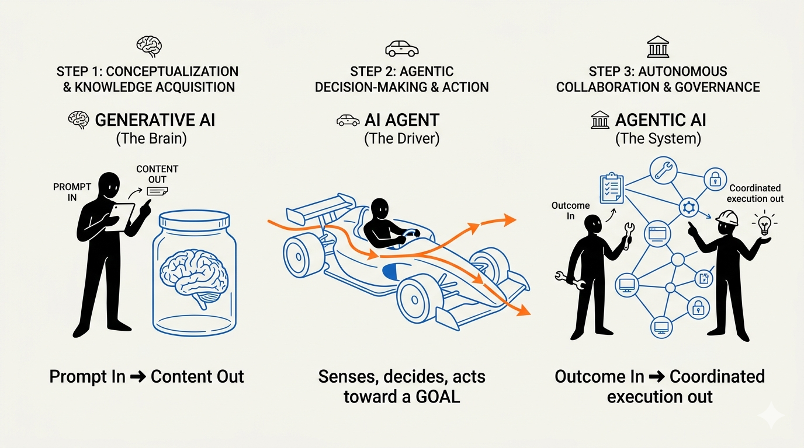

Generative AI vs AI Agents vs Agentic AI: The Brain, the Driver, and the Fleet

A clear, metaphor-driven breakdown of how Generative AI, AI Agents, and Agentic AI differ — and why the distinction matters for anyone building real systems.
These three terms get used interchangeably in almost every conference talk and product launch. They are not the same thing. Understanding the difference is the difference between building a chatbot, building a useful assistant, and building a system that can actually get work done on its own.
The Core Metaphor
Think of a car and a driver.
- Generative AI is the brain. It can think, reason, write, and answer — but it has no hands, no eyes on the road, and no steering wheel.
- An AI Agent is the driver. A brain plus a body. It has goals, can see the road, hold the steering wheel, press the pedals, and reach a destination.
- Agentic AI is the entire transportation company. Many drivers, many vehicles, dispatchers, route planners, supervisors — multiple agents collaborating to deliver outcomes at scale.
| Concept | Metaphor | What It Can Do Alone |
|---|---|---|
| Generative AI (LLM) | The brain | Think, reason, generate language |
| AI Agent | The driver in a car | Sense, decide, and act toward a goal |
| Agentic AI | A transport company | Coordinate many agents to deliver outcomes |
That is the whole map. Let's walk through each one properly.
1. Generative AI — The Brain
What it is
Generative AI refers to models — typically Large Language Models (LLMs), but also image, audio, and video models — that generate new content based on a prompt.
You give it input. It gives you output. That is the contract.
The brain analogy
A brain in a jar is brilliant but helpless. It can:
- understand a question
- reason through it
- imagine a solution
- describe what to do
But it cannot:
- pick up the phone
- send the email
- click the button
- open the file
That is generative AI in its raw form. Pure cognition, no limbs.
What it does well
- Drafting text, code, summaries, translations
- Answering questions from its trained knowledge
- Brainstorming, rewriting, classifying
- Producing structured output when asked (JSON, SQL, code)
What it does not do
- Take actions in the real world
- Remember anything across sessions by default
- Verify facts against live data
- Pursue a multi-step goal on its own
Typical examples
- ChatGPT answering a question
- GitHub Copilot suggesting the next line of code
- An LLM generating a product description from a prompt
If the interaction is prompt in, response out, you are looking at generative AI.
2. AI Agents — The Driver
What it is
An AI Agent is a system that wraps an LLM with the ability to perceive, decide, and act. It uses the model as its reasoning engine, but it also has tools, memory, and a control loop.
The model is no longer just answering — it is driving.
The driver analogy
A driver is a brain plus:
- eyes (sensors → reading data, calling APIs)
- hands and feet (tools → executing actions)
- a destination (a goal → "get me to the airport")
- a steering loop (observe → decide → act → observe again)
The brain is still doing the thinking. But now it is connected to a vehicle that can actually move.
The key components of an agent
- An LLM as the reasoning core — decides what to do next.
- Tools / function calling — APIs the agent can invoke (search, database query, send email, run code).
- Memory — short-term (conversation) and long-term (vector store, knowledge base).
- A control loop — the classic Reason → Act → Observe cycle (ReAct, Plan-and-Execute, etc.).
- A goal or task — the destination the driver is heading toward.
What it does well
- Multi-step tasks: "Find the top three suppliers, check their prices, and email me a summary."
- Interacting with real systems: ticketing tools, cloud APIs, databases, files.
- Recovering from mistakes: re-trying, choosing a different tool, asking for clarification.
Typical examples
- A support agent that reads a ticket, looks up the customer in CRM, drafts a response, and updates the ticket.
- A DevOps agent that monitors alerts, queries logs, and proposes a fix.
- A research agent that browses, gathers sources, and writes a report.
If the interaction is goal in, sequence of actions out, you are looking at an AI Agent.
3. Agentic AI — The Transportation Company
What it is
Agentic AI is the next step up. Instead of one driver in one car, you have multiple specialized agents collaborating — planning, delegating, executing, reviewing — to deliver outcomes that no single agent could reasonably handle alone.
It is less about a single smart driver and more about an organization of drivers with roles, communication, and oversight.
The transportation company analogy
A logistics company has:
- a dispatcher who assigns jobs
- drivers specialized for different vehicle types
- route planners who optimize paths
- supervisors who check quality and handle exceptions
- shared infrastructure — radios, maps, fuel depots
Agentic AI maps onto this almost one-to-one.
The key components of an agentic system
- Orchestrator / planner agent — breaks a high-level goal into sub-tasks.
- Specialist agents — each tuned for a domain (data analysis, code generation, customer comms, cloud ops).
- Inter-agent communication — protocols like A2A (Agent-to-Agent) or message buses.
- Shared tools and context — often via MCP (Model Context Protocol) servers exposing data and capabilities.
- Memory and state — shared workspace so agents do not repeat work.
- Guardrails and supervisors — policies, evaluators, and human-in-the-loop checkpoints.
What it does well
- Long-running, multi-domain workflows: "Plan, build, test, and deploy this feature."
- Cross-system orchestration: ServiceNow + AWS + SharePoint + Teams, all in one workflow.
- Specialization at scale: each agent is great at one thing, the system is great at everything.
- Continuous operations: not a one-shot answer, but an ongoing capability.
Typical examples
- A cloud operations platform where a triage agent, a remediation agent, and a reporting agent collaborate to resolve incidents.
- A software delivery pipeline where a planner, a coder, a tester, and a reviewer agent ship a change end-to-end.
- An enterprise assistant where domain-specific agents (HR, IT, Finance) are coordinated by a router agent.
If the interaction is outcome in, coordinated multi-agent execution out, you are looking at Agentic AI.
Putting Them Side by Side
| Dimension | Generative AI | AI Agent | Agentic AI |
|---|---|---|---|
| Core unit | A model | A model + tools + loop | Many agents working together |
| Input | Prompt | Goal | Outcome |
| Output | Content | Actions toward a goal | Coordinated workflow results |
| Memory | Usually none | Short and long term | Shared across agents |
| Tools | None | Yes | Yes, often via shared protocols (MCP) |
| Autonomy | None | Bounded | Higher, with supervision |
| Best for | Content generation | Task automation | End-to-end business workflows |
A Concrete Walkthrough
Imagine the request: "Reduce our monthly AWS bill by 10%."
As Generative AI
You paste the question into a chatbot. It replies with a generic list of cost optimization tips — right-size instances, use Savings Plans, delete idle resources. Useful, but you still have to do everything.
As an AI Agent
A single agent connects to your AWS account. It:
- Pulls Cost Explorer data.
- Identifies the top spend drivers.
- Lists idle resources.
- Drafts a remediation plan.
- Optionally executes safe actions (tagging, stopping unused instances) with approval.
One driver, one vehicle, one trip.
As Agentic AI
A team of agents collaborates:
- A FinOps planner agent decomposes the goal.
- A discovery agent inventories resources across accounts.
- An analysis agent finds savings opportunities.
- A remediation agent applies safe changes via Terraform.
- A reporting agent posts a Teams update and opens a ServiceNow change record.
- A supervisor agent enforces guardrails and pauses for human approval where needed.
A whole transportation company moving toward the outcome — not just answering a question.
Why the Distinction Matters
1. It sets the right expectations
Selling a chatbot as an "agent" or an agent as "agentic AI" is how projects lose credibility. Calling things by their right name keeps stakeholders aligned.
2. It changes the architecture
- Generative AI → a model endpoint and prompt engineering.
- AI Agent → add tools, memory, a control loop, and observability.
- Agentic AI → add orchestration, inter-agent protocols, shared context, and governance.
Each step up adds real engineering work.
3. It changes the risk profile
The more autonomy a system has, the more it can do — and the more it can do wrong. Guardrails, evaluation, and human-in-the-loop design become non-negotiable as you move from generative to agentic.
4. It changes the value
- Generative AI saves minutes per task.
- AI Agents save hours per workflow.
- Agentic AI reshapes how entire functions operate.
The further right on the spectrum, the bigger the leverage — and the bigger the responsibility.
Common Misconceptions
- "My chatbot is an agent." Not unless it can take actions toward a goal through tools and a loop. A wrapper around an LLM is still generative AI.
- "Agentic AI just means multiple LLM calls." No. It means multiple agents with roles, communication, and coordination — not just a longer chain of prompts.
- "More autonomy is always better." It is not. Autonomy without guardrails is how production incidents happen. Design the smallest autonomy that solves the problem.
- "You need agentic AI for everything." Most real business problems are solved beautifully by a single well-designed agent. Reach for multi-agent systems only when the problem genuinely spans multiple domains.
Key Takeaways
- Generative AI is the brain. It thinks and produces content, but cannot act.
- An AI Agent is the driver. It is a brain wired to tools, memory, and a goal — capable of taking real actions to reach a destination.
- Agentic AI is the transportation company. Multiple specialized agents collaborate, coordinated by orchestration and governed by guardrails, to deliver business outcomes.
Final Thought
The shift from generative AI to agentic AI is not a bigger model. It is a bigger system. The model is still the brain, and that brain matters — but the value comes from giving it a body, a goal, teammates, and the right boundaries.
Pick the right level for the problem. Most teams do not need an entire transport company. They need one excellent driver, in one well-built car, going to one clearly defined destination.